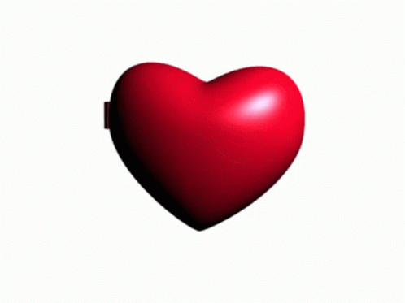
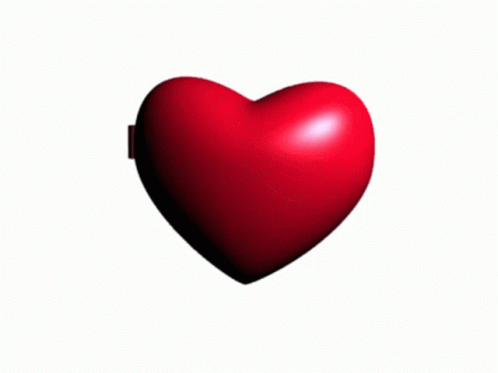
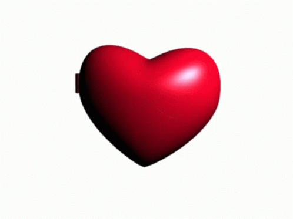

BonziBUDDY, foi um assistente de desktop criado por Joe e Jay Bonzi em 1999.
O agente na tela compartilhava piadas e fatos, gerenciava downloads com seu gerenciador cantava músicas e outras funções.
Em abril de 2007, BonziBuddy ficou em 6º lugar na lista "Os 20 Produtos Tecnologicos Mais Irritantes"
na revista PC World. Os usuários diziam que o programa ficavva fazendo pop-up
e ocultava coisas que você precisava ver. O programa era considerado como um vírus
pelas pessoas de tão irritante que era, e foi desativado em 2004, mas seus fãs
criaram espelos do site original do Bonzi, mas ainda é recomendado utilizar uma máquina
virtual para mantê-lo sob controle.
E como amamos esse pequeno gorila roxo sorridente deixamos algumas imagens para relembrar esse velho amigo.
